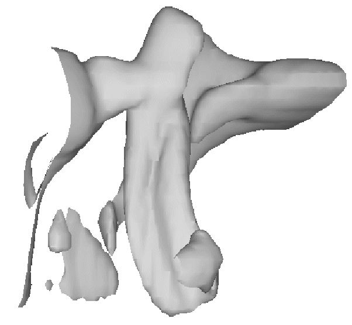

Given a 3-D volume and a contour value, SHADE_VOLUME produces a list of vertices and polygons describing the contour surface. The polygons are described by a (3, n ) array of vertices and a polygon list array that contains the vertices belonging to each polygon. Given a volume array with dimensions of ( D 0 , D 1 , D 2 ), the resulting vertex coordinates range between 0 and D 0 – 1 in x , 0 and D 1 – 1 in y, and 0 and D 2 – 1 in z . This surface can then be displayed as a shaded surface by the POLYSHADE procedure. Shading is obtained from either a single light-source model or from user-specified values.
SHADE_VOLUME computes the polygons that describe a three dimensional contour surface. Each volume element (voxel) is visited to find the polygons formed by the intersections of the contour surface and the voxel edges. The method used by SHADE VOLUME is that of Klemp, McIrvin and Boyd, 1990: “PolyPaint—A Three-Dimensional Rendering Package,” American Meteorology Society Proceedings, Sixth International Conference on Interactive Information and Processing Systems . This method is similar to the marching cubes algorithm described by Lorenson and Cline, 1987: “Marching Cubes: A High Resolution 3D Surface Construction Algorithm,” Computer Graphics 21 , 163-169.
This routine is limited to processing datasets that will fit in memory.
SHADE_VOLUME, Volume , Value , Vertex , Poly [, / LOW ] [, SHADES = array ] [, / VERBOSE ] [, XRANGE = vector ] [, YRANGE = vector ] [, ZRANGE = vector ]
A three-dimensional array that contains the dataset to be contoured. If the Volume array is dimensioned (D 0 , D 1 , D 2 ) , the resulting vertex coordinates are as follows:
0 < X < D 0 - 1; 0 < Y < D 1 - 1; 0 < Z < D 2 - 1.
If floating-point NaN values are present in Volume , then SHADE_VOLUME may generate inconsistent surfaces and may return NaN values in the Vertex argument. The surfaces generated by SHADE_VOLUME may also vary across platforms if NaN data is present in the Volume parameter.
The scalar contour value. This value specifies the constant-density surface (also called an isosurface) to be rendered.
The name of a variable to receive the vertex array. On output, this variable is set to a (3, n ) floating-point array, suitable for input to POLYSHADE.
Note: If SHADE_VOLUME does not generate a surface because the surface defined by the Value argument does not cross any voxel edges in the Volume argument, SHADE_VOLUME sets the Vertex and Poly arguments to undefined variables.
A named variable to receive the polygon list, an n -element, longword array. This list describes the vertices of each polygon and is suitable for input to POLYSHADE. The vertices of each polygon are listed in counterclockwise order when observed from outside the surface. The vertex description of each polygon is a vector of the form: [ n , i 0 , i 1 , ..., i n-1 ] and the Poly array is the concatenation of the lists of each polygon. For example, when rendering a pyramid consisting of four triangles, Poly would contain 16 elements, made by concatenating four, four-element vectors of the form [3, V 0 , V 1 , V 2 ]. V 0 , V 1 , and V 2 are the indices of the vertices describing each triangle.
Note: If SHADE_VOLUME does not generate a surface because the surface defined by the Value argument does not cross any voxel edges in the Volume argument, SHADE_VOLUME sets the Vertex and Poly arguments to undefined variables.
Set this keyword to display the low side of the contour surface (i.e., the contour surfaces enclose high data values). If this keyword is omitted or is 0, the high side of the contour surface is displayed and the contour encloses low data values. If this parameter is incorrectly specified, errors in shading will result.
An optional array, converted to byte type before use, that contains the user-specified shading color index for each voxel. This array must have the same dimensions as Volume . On completion, SHADE_VOLUME replaces this array with the interpolated shading for each vertex of the surface, contained in Vertex .
Note: When using the SHADES keyword on True Color devices, we recommend that decomposed color support be turned off, by setting DECOMPOSED=0 for DEVICE Procedure .
Set this keyword to print a message indicating the number of polygons and vertices that are produced.
An optional two-element vector that contains the limits, over the first dimension, of the sub-volume to be considered.
An optional two-element vector that contains the limits, over the second dimension, of the sub-volume to be considered.
An optional two-element vector containing the limits, over the third dimension, of the sub-volume to be considered.
A common problem in data visualization is how to display a constant density surface (also known as an isosurface), given a three-dimensional grid of density measurements. In medical imaging, stacking a series of two-dimensional images created by computed tomography or magnetic resonance creates a grid of density measurements that can be contoured to display the surfaces of anatomical structures. Atmospheric scientists create three-dimensional grids of water densities that can be contoured at the proper density level to show the surface of clouds. It is relatively easy to produce these surfaces using the SHADE_VOLUME procedure in conjunction with the POLYSHADE function.
This next figure, produced by the following IDL code, shows the three-dimensional contour surface of the precipitating region of a thunderstorm simulated by a three-dimensional cloud model.
|
 |
The data were provided by the National Center for Atmospheric Research. The original data are contained in an array called clouds, a (55, 55, 32) element floating-point array. Each array element contains the amount of water contained in the corresponding volume of air.
; Restore the data:
RESTORE, FILEPATH('clouds3d.dat', SUBDIR=['examples','data'])
; Create the contour surface polygons (v and p)
; at density 0.1, from clouds. Show the low side:
SHADE_VOLUME, clouds, 0.1, v, p, /LOW
; Obtain the dimensions of the volume.
; Variables S[1], S[2], and S[3] now contain
; the number of columns, rows, and slices in the volume:
s = SIZE(clouds)
; Use SCALE3 to establish the three-dimensional
; transformation matrix. Rotate 45 degrees about the z-axis:
SCALE3, XRANGE=[0,S[1]], YRANGE=[0,S[2]], $
ZRANGE=[0,S[3]], AX=0, AZ=45
; Render and display the polygons:
TV, POLYSHADE(v, p, /T3D)
Example Code:
If you prefer not to enter the IDL code by hand, run the batch file
clouds
with the following command at the IDL prompt:
@clouds
The shaded volume can be viewed from different rotations by changing the three-dimensional transformation matrix, !P.T, and calling POLYSHADE for each view. The following code displays 20 views of the volume, each separated by 18 degrees.
; Define number of views:
nframes = 20
FOR i = 0, nframes - 1 DO BEGIN & $
; Translate the center of the (0, 1) unit cube
; to (0,0) and rotate about the x-axis:
T3D, TR=[-.5, -.5, -.5], ROT=[0, 360./NFRAMES, 0] & $
; Translate the center back to (0.5, 0.5, 0.5):
T3D, TR = [.5, .5, .5] & $
; Show the surface:
TV, POLYSHADE(v, p, /T3D) & $
ENDFOR
The animation rate of the above loop will not be very fast, especially with a larger number of polygons. Each image could be saved for rapid replay by writing it to a disk file. Given enough memory and/or display resources, the XINTERANIMATE procedure could be used to animate the views.
|
Pre-4.0 |
Introduced |
INTERVAL_VOLUME , POLYSHADE , SHADE_SURF Procedure , XVOLUME